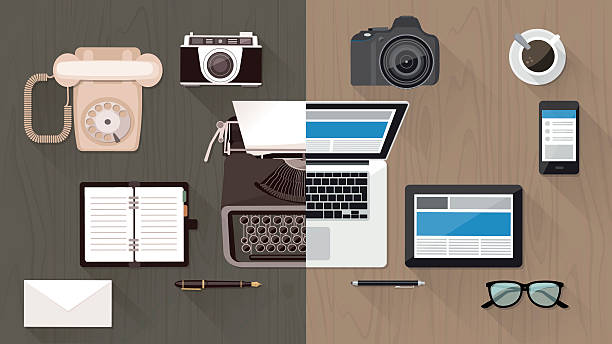

HOW TECHNOLOGY HAS AFFECTED ME IN DAILY LIFE:
Born in 1993 AD, June 29, I grew up in the times when the Proclaimers and Backstreet Boys were a big name in music. Sadly, no one even gets the reference these days. This was the year of the end of the Mars Observer mission after losing contact with NASA. Change was so inevitable everywhere and Kathmandu was no exception. It was starting to hit its stride in electronic market. Consumers were starting to boom because of the availability of cheap electronics from China.
Looking back, the first thing I remember about my childhood is that everything was so physical. Every task required hard physical labor. I come from a lower middle class family with working parents. My mom especially had to work which gave her very few time to do the chores. There were no machines to help her, not even a rice cooker. I have witnessed her cook in fire, wash clothes with her hand, have nothing to aid her in farming.
I first witnessed a computer when I was about four or five at my uncles. It was a Pentium 3 with maybe 4 to 8 MB of RAM. It blew me away. I used to run away from my house just to see what that could do. I remember my uncle used to do Excel spreadsheet data entry and would be blown away with how easy it makes the whole process. In terms of other technologies I got to witness a pager, a PDA at my uncles’.
Gradually things started to boom in technology front here in Kathmandu. Every household started having a CRT color TV with 40-50 channels through antenna and soon cable TV followed. This exposed me to what was happening around the world. Soon, I got to use the dialup internet. Much of a child’s interest though were used to search unproductive yet intriguing things like wrestling news, football news. Mobile phones were not popular till then. Using a dialup internet allowed me to download songs via LimeWire. That’s where I was exposed to songs from Bob Marley, Blue, Backstreet boys. Searching led me to even better bands and music like Linkin Park, System of A Down which eventually got me to bands like Rush, Yes, Frank Zappa. This I guess was the first time I appreciated art in my life. Thus, internet has a big part in shaping up my personality.
More advanced communication technologies made their presence felt soon after. We soon had mobile phones and better internet provided by ISPs like mercantile and broadlink. Chinese electronics made daily life very easy and affordable. We had an oven to cook our food, a washing machine to wash our clothes, motorcycles to travel in our household. Our PC got stronger and set me in the path of gaming. I loved gaming. Playing Halo: Combat Evolved for the first time really opened up my perspective to storytelling via different medium, a story that you could be involved in. It influenced my art.
Seeing technology evolve has been a privilege as a 90s kid. I have witnessed technology change the way of life itself and whole evolution of human beings have turned into another direction because of this.
Today, I have a laptop with an Internet connection which has made it possible to study a British course from my home. I can connect to my cousin studying in Lund University, Sweden every day. It does not even feel like she has left us to stay that far because of how frequently we talk and have face time. It has made my domestic life easier. There’s a machine to make popcorn in my house for heaven’s sake. I have a personally built PC. I built it because of the sell available for black Friday via Amazon. Even though Amazon does not provide its services in Kathmandu, the air transportation and globalization has made it possible. Just last week we built a sofa from a furniture looking at a design that I saw in internet. There’s online market, online food service available with the click of a button (or tap of a screen). I can pay my bills via my mobile. So, technology has been a major part of shaping me as a human. Yes, everything has its ying and its yang, but in retrospection I see nothing but greatness in what we’ve achieved as a human race and am finally focused and passionate to add something to it.